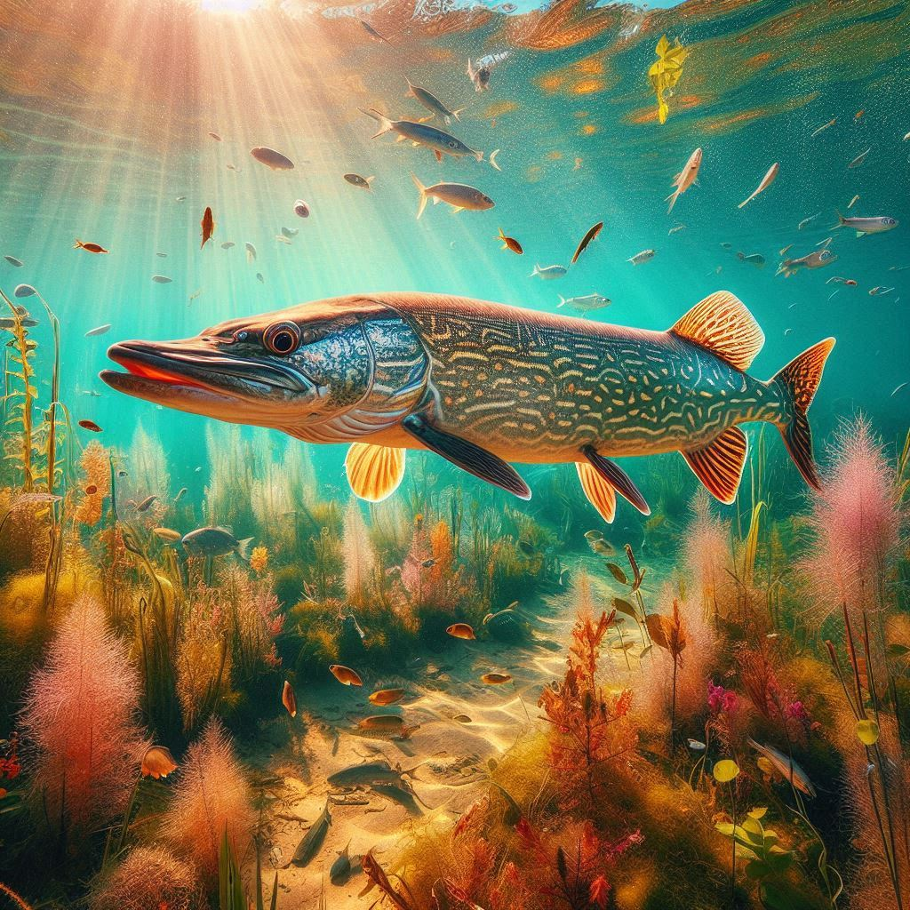

Szczupak
Szczupak to drapieżna ryba słodkowodna, znana ze swojego charakterystycznego, wydłużonego ciała i agresywnego zachowania. Żyje głównie w jeziorach i rzekach.
Szczupak to drapieżna ryba słodkowodna, znana ze swojego charakterystycznego, wydłużonego ciała i agresywnego zachowania. Żyje głównie w jeziorach i rzekach.
Okoń to popularna ryba występująca w jeziorach i rzekach Europy. Jest ceniony za swoje walory smakowe oraz interesujące ubarwienie z ciemnymi pręgami na bokach.
Amur to spokojna ryba słodkowodna, pochodząca z Azji. Jest roślinożerny i żyje głównie w wodach stojących lub wolno płynących.

Karp to popularna ryba słodkowodna, znana ze swojego smaku i wartości odżywczych. Często hodowana w stawach.